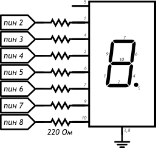
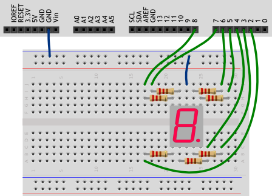

Секундомер на Arduino Uno
Создадим секундомер, который считает до 10.
Детали
- Плата Arduino Uno
- Беспаечная макетная плата
- Семисегментный индикатор
- Резисторы 220 Ом - 7 шт.
- Премычки - 9 шт.

Принципиальная схема

Схема на макетной плате
- Выводы 3 и 8 семисегментного индикатора оба являются катодами, к земле можете подключать любой из них.
- Внимательно рассмотрите схему, сопоставьте сегменты индикатора с номерами его ножек, а те, в свою очередь, с пинами Arduino, к которым мы их подключаем.
- Вывод 5 индикатора — это точка. Мы её не используем.
- Сегменты индикатора — просто светодиоды, поэтому мы используем резистор с каждым из них.
Скетч
#define FIRST_SEGMENT_PIN 2 #define SEGMENT_COUNT 7 // Префикс «0b» означает, что целое число за ним записано в в двоичном коде. //Единицами мы обозначим номера сегментов индикатора, которые должны быть включены для //отображения арабской цифры. Всего цифр 10, поэтому в массиве 10 чисел. //Достаточно байта (8 бит) для хранения комбинации сегментов для каждой из цифр. byte numberSegments[10] = {0b00111111, 0b00001010, 0b01011101, 0b01011110, 0b01101010, 0b01110110, 0b01110111, 0b00011010, 0b01111111, 0b01111110}; void setup() { for (int i = 0; i < SEGMENT_COUNT; ++i) pinMode(i + FIRST_SEGMENT_PIN, OUTPUT); } void loop() { // определяем число, которое собираемся отображать. Пусть им // будет номер текущей секунды, зацикленный на десятке int number = (millis() / 1000) % 10; // получаем код, в котором зашифрована арабская цифра int mask = numberSegments[number]; // для каждого из 7 сегментов индикатора for (int i = 0; i < SEGMENT_COUNT; ++i) { // ...определяем: должен ли он быть включён. Для этого // считываем бит (англ. read bit), соответствующий текущему сегменту «i». // Истина — он установлен (1), ложь — нет (0) boolean enableSegment = bitRead(mask, i); // включаем/выключаем сегмент на основе полученного значения digitalWrite(i + FIRST_SEGMENT_PIN, enableSegment); } }
Пояснения к коду
- Мы создали массив типа byte: каждый его элемент это 1 байт, 8 бит, может принимать значения от 0 до 255.
- Символы арабских цифр закодированы состоянием пинов, которые соединены с выводами соответствующих сегментов: 0, если сегмент должен быть выключен, и 1, если включен.
- В переменную mask мы помещаем тот элемент массива numberSegments, который соответствует текущей секунде, вычисленной в предыдущей инструкции.
- В цикле for мы пробегаем по всем сегментам, извлекая с помощью встроенной функции
bitReadнужное состояние для текущего пина, в которое его и приводим с помощью digitalWrite и переменной enableSegment. - bitRead(x, n) возвращает boolean значение: n-ный бит справа в байте x.